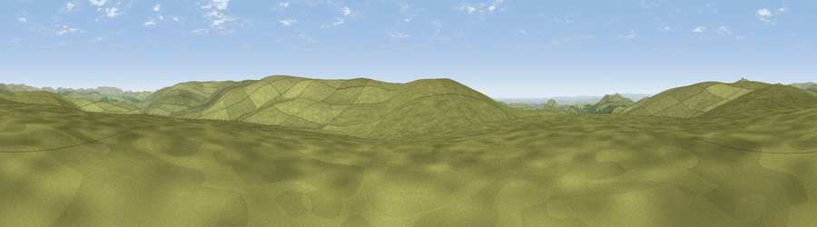

Viewpoint near Princetown
#22511 in England · top 43% of its area beats it · near PrincetownThe view, rendered

A 360° render of this exact spot computed from the terrain model, tree cover and land cover — summer colours, afternoon light, calibrated against photographs of famous viewpoints. Real trees, hedges and buildings will differ in detail.
The panorama
Grey silhouette: terrain skyline in each direction (720 bearings, Earth curvature and refraction included). Dashed green: skyline with trees (+15 m) and buildings (+8 m) as obstacles. Blue strip: how far the ground is visible on each bearing.
Where the view opens
Wedge length = distance to the farthest visible ground on that bearing (vegetation-aware). Rings at 10, 25 and 50 km.
What fills the view
98% grassland · 1% woodland ·
Angular shares of the visible panorama (visual magnitude), not map area. Landscape diversity 0.06 (0–1 Shannon).
Key numbers
More beautiful places nearby
The staircase of upgrades: each row has a higher view potential than everything closer. Driving times are estimates from straight-line distance, calibrated against real road routing — check an actual route before setting out.
| Place | Direction | Drive | Score |
|---|---|---|---|
| Viewpoint near Princetown | NNW · 1 km | ~2 min | 55.1 |
| Ter Hill | E · 4 km | ~9 min | 60.2 |
| Leather Tor | W · 4 km | ~9 min | 70.5 |
| Sheeps Tor | WSW · 4 km | ~10 min | 78.0 |
| Viewpoint near Dousland | W · 5 km | ~11 min | 81.0 |
| Shell Top | S · 6 km | ~14 min | 81.8 |
| Viewpoint near Lee Moor | SSW · 9 km | ~17 min | 82.7 |
| Viewpoint near Downderry | WSW · 31 km | ~49 min | 83.5 |
50.51468, -3.97002 · source: screening · position refined by local search. Computed location — check access rights before visiting.